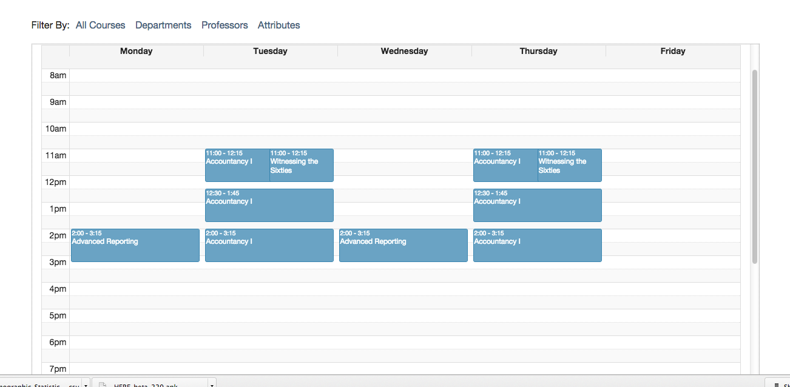
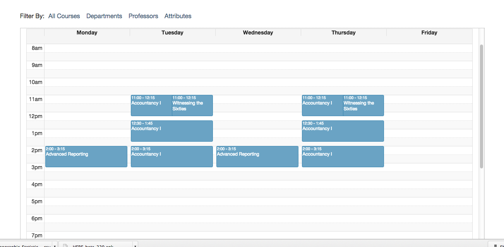

Notre Dame Class Search
Rails and EmberJS application for scheduling Notre Dame classes.
 

Tech Stack
EmberJS, Ruby on Rails, PostgreSQL
Description
During my final semester at the University of Notre Dame, I took a class called Interaction Design, where we were focusing on learning about User Experience and Human Computer Interaction. One of our two assignments was to choose an existing interface and improve upon it. For my interface of choice, I chose Notre Dame’s Class Search website, an interface which had frustrated me for the last 4.5 years.
The main view of selecting a course and viewing its sections
Information was gathered through parsing the Notre Dame Class Search’s website for every single department and attribute combination, in addition to their detail pages. From there, an API was built using Rails and served up to the EmberJS application, which handled all of the filtering and search features client-side.
Rather than giving each section of the application (Departments/Professors/Attributes, Courses, and Course Detail), their own single page, I decided to contain the application to a three-column view for easier navigation around the application. Additionally, every section has its own search bar, allowing the user to search for specific items in the list at anytime rather than having to use the web browser’s search function.
Users could select courses to see how their weekly agenda would look
Overall, my re-design of the Class Search interface was well-received by students of the University. At the time of writing, Class Search has 2,652 users, 3,592 sessions, and 4,230 pageviews. You can check out an article written by the Design apartment about my application here.
View Project • View Source